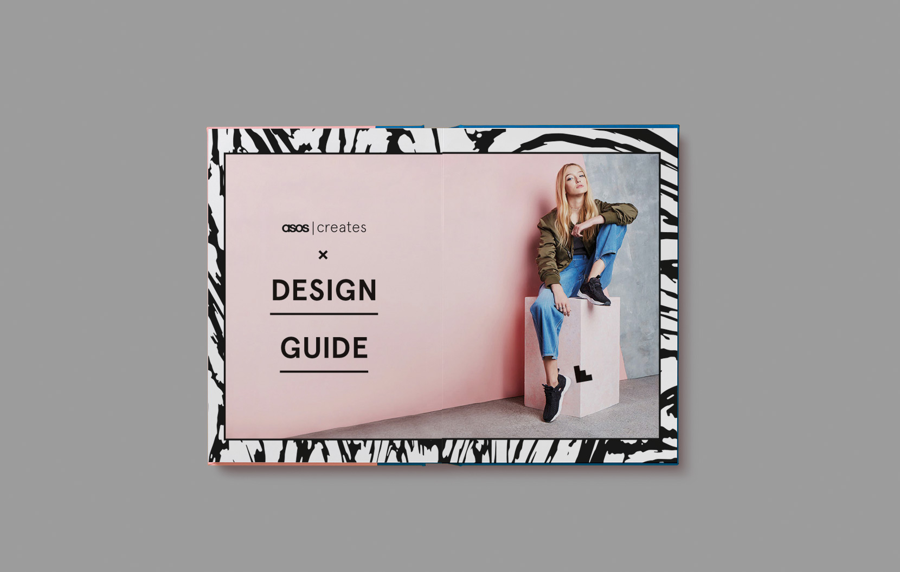
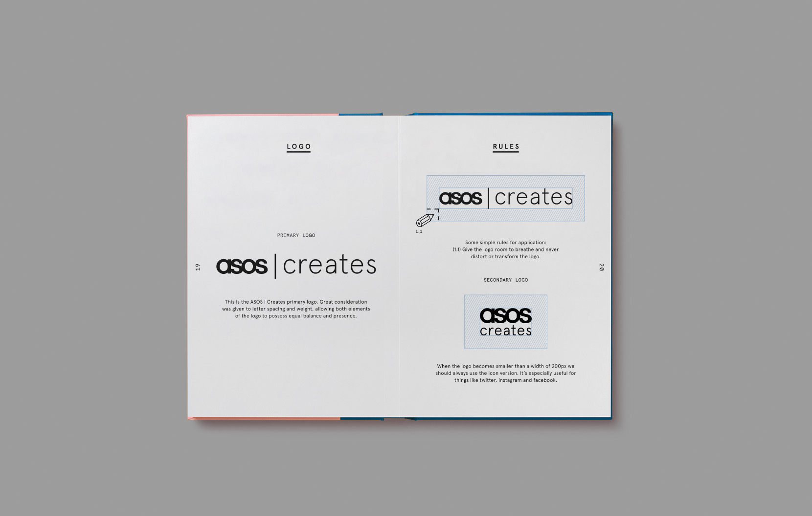

UFO STUDIO
ABOUT
Strategy | Design | Art Direction | Branding
ASOS Creates Brand Identity
UFO created the new brand identity for the ASOS internal creative agency, "ASOS Creates". The visual identity brings together the energy and passion of its in-house creative team, with the strategic thinking and insight of the marketing team.
To do this we created geometric grid patterns and shapes to represent the experience, logic and thinking ASOS applies to a campaign. We then created a set of custom fun and vibrant patterns to represent the energy and passion of the talent and their application of creative skills to any brief. With the aim of creating a visual manifestation of how the agency operates - we wanted the branding to show the blend of expert strategy and insight with the unrivalled creative execution and passion.


Back